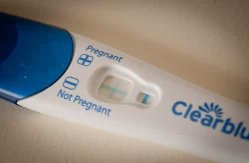

< < < Back
25 Reasons Your Girlfriend Is Overrated – Return Of Kings
At some point in all of our lives we’ve been charged with the task of describing our newly-minted girlfriends to our friends and family in hopes of gaining some sort of approval or blessing. We do our level best to justify choosing her as a significant other by highlighting all of her qualities while conveniently leaving out her weaknesses. Who can blame us? We all know that relationships are much easier when the girl we’ve chosen gets the seal of approval from the people closest to us.
However, after digesting the crimson capsule I’ve come to realize that most, if not all, of what I hear from friends and loved ones about their women aren’t really qualities at all. Especially when it comes to American women. Some of what I hear are myths, some qualities are exaggerated and grossly overrated and, believe it or not, some are even red flags. What they all have in common is that most of these so-called qualities are merely fool’s gold—a delusional spin on negative traits as a coping mechanism to the reality that there is no such thing as a quality woman in this part of the world. The sad thing is that men actually believe these qualities make her a catch and that he’s lucky to have her.
Below is my list of the 25 most prolific fake qualities I’ve heard when listening to men describe their unicorns. Chances are you or someone you know has either acknowledged or believed them. It’s time to take the blinders off and see these endowments for what they really are.
1.“She lets me be me”
…for now. But the moment an alpha gives her the tingles your cute little idiosyncrasies will turn into major annoyances.
2. “She’s an independent woman”
No need to elaborate too much on this one, as there is way too much documented evidence that so-called independent women make horrible mates, including this article.
3. “She believes in 50/50 relationships”
Feminist.
4. “We have sooo much in common”
No you don’t. She’s putting on an act to lock you down. As soon as that happens off-roading and weekend camping trips are out.
5. “She’s a good Christian woman”
Women who claim to “put God first” are among the most hypergamous females on the planet. AWALT, fellas…especially this particular breed.
6. “She’s one of the guys”
Run for the hills if she actually says this out loud as this is the calling card of a bona fide slut. This is a textbook attention grab and a strategy to increase the number of horses on her carousel ride.

7. “She has a great job”
Unless she’s a preschool teacher, nurse, or any profession that requires a nurturing personality, she sits at a desk from 9 to 5, updates her Facebook status every 15 minutes, and wants to fuck her boss (FYI: steer clear of high school teachers).
8. “She is so laid back”
Women are laid back so long as you are dominant and hold frame, as it relaxes them to know you’re in control. If you lose that quality she’ll be the bitchy, neurotic creature she’s designed to be.
9. “She’s such a strong woman”
Betas will often mistake a woman’s jaded disposition (a direct result of being pumped and dumped through her twenties) as strength.
10. “She doesn’t try to smother me”
If you’re holding frame, fucking her senseless, and running solid asshole game she’ll want to smother you. If she doesn’t, she’s thinking of smothering someone else if she isn’t already.
11. “She’s always the life of the party”
Attention whore (read: slut)
12. “She’s down to earth”
The perfect description of a female who doesn’t take pride in her personal appearance and is often seen in sweats and flip-flops. Betas gleefully refer to these women as “low maintenance.”
13. “She challenges me”
Bitching and nagging isn’t her challenging you. It’s her flat out telling you that you’ve lost frame. A woman in check rarely challenges her man.
14. “She’s great in bed”
Most girls are the same in bed, as they generally just need to be physically present to produce a favorable sexual experience for a man. Willingness, attractiveness, and blowjob skills do make a difference, but there’s largely no real skill in getting fucked.
15. “She’s fearless”
Another slut tell—especially if the word “fearless” comes out of her mouth. This means she’s impulsive. Her YOLO attitude is a dead giveaway that her holes have been plundered by countless cocks.
16. “We’re soulmates”
You’re kidding right?
17. “She’s genuine”
Beauty, as with genuineness, is only skin deep. She’s as genuine as her mission dictates.
18. “She speaks her mind”
Translation: she won’t shut the fuck up.
19.“She gets along famously with my family and friends”
Again, this is a strategy to lock you down. Getting ringing endorsements from the people who have your ear is the quickest way to accomplish this goal. Her true colors will eventually shine through, as she won’t hesitate to talk shit about your loved ones soon as you put a ring on it.
20. “She’s a good mother”
Click here.
21. “She doesn’t want kids”
…until she shows you the dreaded plus sign while swearing on grammy’s grave it was an accident. All women are biologically hardwired with a strong desire to reproduce. Not wanting kids is an illusion designed to lull you into a false sense of security so you will raw dog her and help fulfill her biological imperative.

22. “She’s my best friend”
There is a shred of truth to this, as she’s now your only friend after systematically eradicating your social circle one person at a time.
23. “She’s been through a lot so she’s wise for her age”
She’s fucked a ton of guys, been through a lot of drama, and has a lot of stories to tell. Enjoy the baggage.
24. “She’s open-minded”
She doesn’t have any steadfast beliefs or habits. Often referred to as a “free spirit,” which is code for a girl who changes views like she changes cocks. For the record, I’ve never met a slut who wasn’t open-minded.
25. “We have a connection”
She’s really hot, loves to fuck and begs to give you blowjobs. Trust me, I know this can make you feel like you have some sort of cosmic connection with her, but don’t kid yourself. Odds are you’re not the only dude who has that same “connection” with her.
So the next time you’re engrossed in a conversation with one of your buddies and he starts spouting off his girl’s faux positive qualities, do yourself a favor and take them with a grain of salt—especially if you live in the West.
Read Next: 5 Reasons Why You Shouldn’t Get Into A Serious Relationship With A Woman